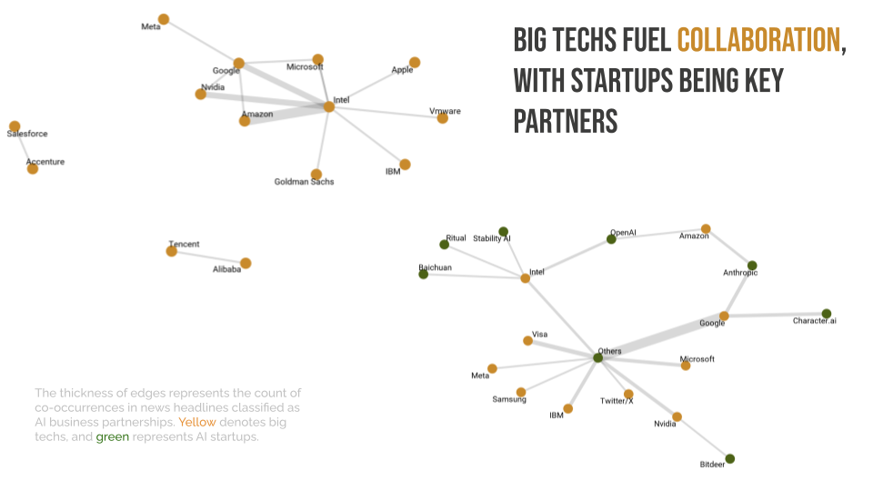

Artificial Intelligence (AI) and Large Language Models (LLMs) have become buzzwords, sparking significant media attention. I found myself intrigued by how AI is portrayed in the media – what issues capture public interest, what sentiments news stories tend to evoke, and how key players like tech leaders and companies shape these narratives. To tackle these questions, my friend and I analyzed 10,000 AI-related news headlines from May to November 2023. In this blog post, I’ll share the behind-the-scenes process of our project, discussing how we approached these questions. If you’re more interested in the results than the technical details, you can check out our presentation slides and my blog post that highlights our findings with 10 graphs.
Research design
To begin with, I outlined a flowchart to guide our analysis, as shown below. Each question was broken down into general tasks (indicated by blue boxes), such as topic modeling, sentiment analysis, and named entity recognition. For each task, we clarified the information we aimed to obtain and started to identify language models or methods (represented by pink boxes) that could help address these questions. Complex tasks were further decomposed into downstream activities (marked by green boxes), including model fine-tuning and more detailed classification. Expected outputs were highlighted in yellow boxes.
One key lesson I learned during this process is the importance of keeping humans involved at every stage. Our role is not just as human annotators for preparing training data, but also as evaluators and improvers of the results generated by language models, discovering new avenues for exploration, and interpreting the results. By maintaining this human-in-the-loop approach, we ensure the outcomes are accurate and meaningful, leading to deeper insights and better decision-making.
What are dominant themes?
Topic identification
For topic extraction, Structural Topic Modeling (STM) and BERTopic were the first methods that came to our mind. STM, with its capability to integrate metadata, is well-suited for exploring how external factors influence topic prevalence – particularly in cases where media coverage might be shaped by the type of media source or country-specific characteristics. To optimize performance, we experimented with different numbers of topics and varying metadata inputs. We settled on 15 topics, ensuring that the topics are sufficiently distinct from one another while capturing the overall content of the text data.
BERTopic, on the other hand, uses embeddings and clustering to identify topics, minimizing outliers that don’t fit in any defined topics and enabling more accurate semantic representation. What’s also nice about BERTopic is its flexibility to incorporate user guidance, known as guided BERTopic. This allows users to provide a set of keywords aligned with specific themes, guiding the clustering process to improve performance.
How well do these methods perform in identifying topics? To find out, we randomly selected 1,000 news headlines and (1) examined the topic of the highest probability for each headline, and (2) checked for any missing topics of interest. Here’s what we found:
BERTopic performs better at capturing more specific topics than STM
For example, when analyzing AI companies, STM might group all AI companies into a single topic. In contrast, BERTopic can distinguish between companies with a competitive focus (with keywords like “competition” and “winner”) and those that are more collaborative (with keywords such as “acquisition” and “partnership”).
BERTopic can over-consolidate when words frequently appear together
This can lead to topics being grouped too narrowly. For example, news about Humane’s wearable AI pin was categorized as a unique topic, despite it fitting better within a broader AI products category that was also identified.
Both methods can miss topics of interest
Both STM and BERTopic identified major topics like job displacement and ethical concerns, which were part of AI safety and risks. However, upon closer examination of 1,000 headlines, we found additional subtopics such as advanced AI concerns and AI hallucinations. This indicates that these unsupervised or semi-supervised approaches may not well capture the full range of subtopics, especially when there’s significant variation.
Therefore, we decided to keep the broader topics or dominant themes that were identified by both methods, including AI potentials, AI products, AI companies, AI industrial development, AI policies and regulations, AI stocks, AI research, and AI safety and risks.
Text classification
Our next step is to address the limitation of STM and BERTopic – their inability to reveal specific subtopics within broader themes. This is where we turned to few-shot learning with GPT-4 Turbo, one of the most advanced LLMs. Here are our key steps:
Subtopic generation and manual review
We used GPT-4 Turbo to generate potential subtopics from each group of texts with dominant themes. Afterward, we manually reviewed the suggested subtopics, selecting those that were distinct and relevant. For instance, within the broader theme of AI safety and risk, we identified subtopics like job displacement, copyright infringement, cybersecurity risks, ethical concerns, AI fakery, AI attribution, AI misuse, AI accuracy, AI privacy, and concerns about advanced AI.
Text classification and manual adjustments
Once we had the subtopics, we asked GPT-4 Turbo to classify the texts, providing examples for guidance. We specified that if a text was difficult to categorize, it should be assigned to “others”. We then manually reviewed the “others” category (~100), where any text that didn’t fit a specific topic was discarded, and assigned the rest to the most appropriate existing subtopic.
What sentiments and emotions tend to be evoked?
Moving on to the second question, we first broke down sentiment analysis into two components: (1) sentiment polarity (positive, negative, neutral), (2) specific emotions (anger, fear, sadness, surprise, joy, neutral). The first provides an overview of the general mood of media coverage, while the second offers more detailed emotional undertones.
Identify sentiment polarity
To accurately label sentiment polarity, having robust labeled data for training classifiers is key. We developed our labeled data by (1) manually labeling sentiment polarity for 1,000 news headlines, (2) automated classification using popular Python libraries – Vader, TextBlob, and Flair, and (3) validating these labels with manual adjustments. During this process, we identified a couple of common issues and took corrective actions:
Conservative positive labels
Some headlines that seemed to trigger positive sentiments were labeled as neutral by us. To address this, we added two more human annotators to vote on the appropriate sentiment, with the majority vote determining the final label.
Misinterpretation of positive keywords
Words like “revolution” or “revolutionize” often implied positive sentiment, but were sometimes misinterpreted as negative by these models. We manually corrected these cases to ensure accuracy.
To guarantee enough training data for train our classifier, as this data will need to be further divided into training and test sets, we randomly selected additional news headlines and repeated the process until we had at least 1,000 labeled headlines with consensus between human annotators and the models.
To train our sentiment classifier, we fine-tuned a pre-trained language model RoBERTa using PyTorch. We allocated 90% of the data as training set and 10% as the test set, ensuring the test set remained untouched throughout training. Our model parameters included a learning rate of 1e-5, a batch size of 32, 10 epochs, and AdamW as the optimizer. To address challenges like unstable gradients, we further implemented several techniques, including
Gradient clipping: limited the gradients to prevent them from becoming too large
Step decay: reduced the learning rate after each epoch to avoid overshooting during training
After hours of training, we achieved impressive metrics, with a validation accuracy of 0.9658, and a validation F1 score of 0.9663!
Identify emotions
To dig deeper into emotions, we used DistilBERT, which can (1) identify Ekman’s six fundamental emotions – anger, disgust, fear, sadness, joy, and surprise – along with a neutral category, and (2) determine whether a text is fear-mongering.
From the automated classification results, we manually reviewed 1,000 observations and decided to focus on fear as a key emotion for further analysis. This decision was driven by both technical and theoretical considerations. DistilBERT’s binary classification for fear was more reliable compared to its multi-label classification of other emotions. Furthermore, since our earlier analysis showed an overall hype with a majority of positive sentiments, exploring negatively charged news headlines could offer insights into how media highlights potential risks and challenges related to AI.
So the next task was to improve the identification of fear in news headlines. To better validate these binary labels, we turned to Llama 2 with few-shot learning. We started by running Llama 2 on 1,000 news headlines and refined our prompt by specifying the role of the LLM, the task, allowing for uncertainty with a “don’t know” category, rationale for classifying fear, and examples of fear and non-fear. For this round, we asked Llama 2 to provide a rationale for its judgement to ensure the model’s reasoning aligned with the task.
After examining the classified results, we identified several issues:
Incorrect judgments despite correct reasoning
Llama 2 sometimes provided correct reasoning, but the final decision was wrong. We iterated the prompt to correct these cases.
Non-response due to safeguards
Llama 2 didn’t respond to news headlines containing sensitive topics like child pornography, likely due to model safeguards. We manually classified these cases as fear-mongering in the end.
With an improved prompt, we ran Llama 2 on the entire dataset, but without requiring reasoning in the output to reduce computational costs. One limitation of this approach though is its inability to distinguish whether a news headline is categorized as fear-mongering because the reporter intentionally incited fear through specific words or styles, or because the public might inherently associate the topic with fear, which opens avenues for further research.
We also connected topic extraction with sentiment analysis by examining sentiment breakdown for each topic and incorporating richer metadata – ideological leanings of media outlets. To do this, I scraped the data for us from the AllSides organization and the detailed process is documented in another post.
Which companies and individuals dominate media attention?
Opinion leaders and tech companies represent another group of key entities that can shape AI coverage. This was prompted by the presence of influential figures like Bill Gates and Elon Musk in topic-related keywords. AI companies formed a dominant theme with two distinct subtopics – company-wise competition and collaboration – providing a fascinating comparison to investigate.
The task at hand involved named entity recognition (NER) to identify and categorize these important entities, of which I took entire ownership. Using distilbert-NER, a DistilBERT variant specifically fine-tuned for NER tasks, I extracted news headlines mentioning individuals and organizations. The top three opinion leaders, based on the amount of media coverage, were Elon Musk, Bill Gates, and Sam Altman. To identify tech companies, I applied NER to news headlines categorized as AI companies. Since startups might not always make headlines, I also included keyword matching with terms like “startup” and “company” to capture a broader range of tech-related entities.
To visualize these insights, I created data visualizations to represent the critical narratives around these opinion leaders and tech companies. Using GPT-4 Turbo, I identified key themes in the news headlines and color-coded them – red for predominantly positive sentiments and blue for negative ones. For the common narrative of AI safety and risks, I used a larger font to ensure it stood out and added pencil-sketch headshots of key figures to enhance the visual appeal.

To explore the media coverage of company-wise competition and collaboration, I used the igraph package in R to create network diagrams. These diagrams showed the co-occurrence of company names in various text corpora, with the thickness of the connecting lines representing the frequency of co-occurrence. This method helped to highlight the relationships between companies and offered insights into the competitive and collaborative dynamics within the AI industry.

To conclude, working with NLP models hosted at Hugging Face and large language models (LLMs) has been a fascinating experience. Here are a few key takeaways:
LLMs excel at summarization tasks
LLMs require more fine-tuning and clever prompt engineering for classification tasks
GPT-4 Turbo is the best-performing LLM for similar tasks but usually cost more due to its closed-source nature
Always keep humans in the loop